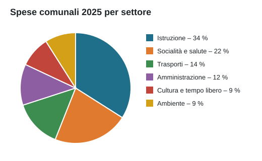

Consuntivo 2025
Il Consiglio comunale ha approvato il consuntivo 2025, chiuso con un leggero avanzo. La ripartizione delle spese per settore è illustrata qui sotto.

Il messaggio municipale completo è consultabile presso la cancelleria.
Altre notizie
Buono a sapersi
La maggior parte dei moduli si può compilare online e inviare per e-mail o per posta. Allo sportello vi aiutiamo volentieri.
Numeri d'emergenza
- Pompieri 118
- Polizia 117
- Ambulanza 144